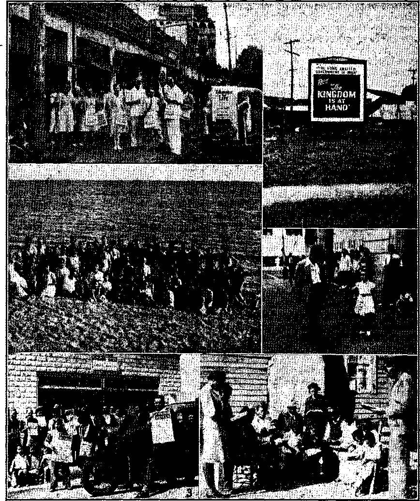
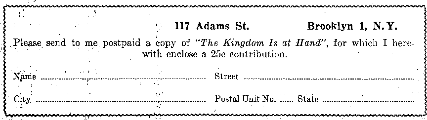

Company-owned Towns Win Freedom
jChief Cause of Caneer-Spread Gradually
Hierarchy Strives to Progress Backwards
The Leo-Pius Blueprint Briefly Defined
Fight Against American Constitution.
‘‘Thy Word Is Truth”
Administration for Unification
Mexico Upholds Freedom of Worship
Public Ownership of Public Utilities
Profitable Misleading of Public
A Glimpse at the United States Treasury
Hence the Monetary Conferences
Published every other Wednesday by WATCHTOWER BIBLE AND TRACT SOCIETY, INC.
117 Adams St.. Brooklyn 1, N. Y.. U. A* OFFICERS President N. H. Knorr
Secretary W. E. Va.n Am burgh
Editor Clayton J. Wood worth
Five Cents a Copy JI a year in the United States $1-25 to Canada and all other countries
NOTICE TO SUBSCRIBERS
Remittances: For your own safety, remit by postal note or by postal or express money order or by bank draft, When coin or currency is lost in the ordinary mails, there is no redress. Remittances from countries other than those named below may be made to the Brooklyn office, but only by International postal money order* ’
Receipt of a new or renewal subscription will be ac* knowledged only when requested. Notice of Expiration is sent with the journal one month before subscription expires. Please renew promptly to avoid loss of copies. Send change off address direct to us rather than to the post office. Your request should reach us at least three weeks before the date of issue with which it is to take effect- Send your old as well ae the new address. Copies will not b© forwarded by the post office to your now addresp unless extra postage is provided by you.
Published also in German, Creek, Portuguese, Spanish and Ukrainian.
OFFICES FOR OTHER COUNTRIES
Australia.
Canada England India Newfoundla nd New Zealand Philippine Islands South Africa
7 Beresford Rd., Strath field, N. S. W.
40 Irwin Ave., Toronto 5, Ontario
34 Craven Terrace, London, W 2
167 Love Lanfe, Bombay 27
P. O. Bot 521. St. John's
177 Daniell St., Wellington, S. 1
121S’B Oroquieta St., Manila
623 Boston Ilou^e, Cape Town
Entered as second-class matter at Brooklyn, N. Y*. under the Act of March 3, 187&.
' * In Brief
~ Beautiful Lisbon
♦ Beautiful Lisbon, which had almost 600,000 population in 1930 and now claims 750,000, was completely destroyed November 1, 1755, when a terrible earthquake, a tidal wave and a great conflagration almost obliterated what is now one of the finest cities in Europe.
Lisbon is a busy place. The streets are thronged with fishwives bearing flat trays of fish on their heads; Galician water carriers with their casks; bakers with as much as a hundredweight of bread in a huge basket slung from their shoulders; bagpipe-playing peasants,' with sombreros and sashes; whistling knife-grinders; lottery peddlers, and everything else that will make a noise. All the people of Lisbon are in one grand rush. Traffic moves at breakneck speed. One woman who came across the Atlantic by airplane safely, and without distress, fainted on the way to her hotel because the taximan drove so recklessly through the crowded streets.
An Unusual St. Elmo’s Fire
♦ St. Elmo’s fire, the phosphorescent glow that sometimes surrounds the tops of masts, usually does no damage, but in the summer of 1945 there was a display of it in southern Spain, in the neighborhood of Almeria, that set fire to the clothing of more than thirty men, women and children, and even laundry which had been laid out upon the grass to dry.
In one of these peculiar storms, flames thirty yards high leaped in the sky, and one group of scientists that came to investigate reported that the fire had ignited their box of instruments. It is noteworthy that land in the area of these manifestations is 'a particularly good conductor of electricity. The conclusion was drawn that the land was charged with radium or some rare mineral, and on that basis speculators staked out more than L/XJO land claims.
“And in His name shall the nations hope.”—Matthew 12:21, .U.S'. I7.
Volume XXVII Brooklyn, N.Y,, Wednesday, July 3, 1946 Number 699
Company-owned Towns Win Freedom
IN MANY parts of the country, particularly in mining districts and industrial centers, giant corporations have built housing projects, and even whole towns, on their own property. The houses and stores as well as the very sidewalks and streets are owned by these private interests, and because of thi^ fact they have run things very much their own way without regard for the civil liberties and rights of citizens. In effect, they have said that the Constitution does not apply in such towns because they are on “private property”. But now a new chapter has been written in the statute books on this subject by the supreme court of the land, and all company-owned towns will do well to read it. In its decisions of January 7, 1946, the Supreme Court nipped the bud of this American species of. the old feudal system, and thus made the Constitutional torch of freedom burn more brightly.
The history of these important decisions goes back to a little Alabama town of 1,530 population, Chickasaw by name, which is a suburb of the city of Mobile. As early as 1921 the Tennessee Land Company, owners of Chickasaw, built therein a shopping district Known as the “business block” consisting of a group of stores. There was a barber shop, a laun-,dry branch, a doctor’s1 office, a dry goods store, a restaurant, a drugstore, and commercial offices. A ten-foot paved sidewalk extended along this block as well as a paved street.-
In 1941 Chickasaw was sold to the Chickasaw Development Company,, and
July s, is« -a little later it was re-sold to the Gulf Shipbuilding Corporation. These transactions included the whole town, the homes and stores, with the water and sewer systems and disposal plant, as well as the police force and United States Post Office, and life in general continued as usual. There were no visible boundary lines, no wall or fence, and strangers could come and go as they pleased without knowing when they entered or left. From all outward appearances Chickasaw was like any other American town.
And because it was like any other village or community of intelligent creatures, the commission given to Jehovah’s witnesses to call on all the people with the Kingdom message in these last days included Chickasaw. This town with its 1,530 inhabitants could not be by-passed without suffering Jehovah’s displeasure; heijce God’s messengers of peace visited it from time to time. However, it was not long after the Gulf Shipbuilding Corporation became the owners of Chickasaw that God’s witnesses were informed that they could not preach in this town without permission from the corporation’s town manager; and he had no intention of giving such permission.
After several threats by this town manager, a certain E. B. Peebles, signs were posted in the store windows reading as follows: “This is private property, and without written permission, no street, or house vendor, agent or solicitation of any kind will be permitted.” Such signs did not frighten or deter Jehovah’s faithful messengers. As usual' they w’ere on the streets, six of them, on
3
Christinas eve, Friday, December 24, 1943, exhibiting The Watchtower and Consolation to the passing pedestrians and calling out in moderate tones, “Watchtower, announcing Jehovah’s . kingdom.”
This situation afforded the. one-man ^police force, made up of the total might of one A. T. Chatham, a golden opportunity to gain notoriety, so he thought, by driving these “criminals” out of Chickasaw. So forth be sallied to the attack like a fox terrier. When he pounced on them with what he thought was sufficient force to make them turn and run he was surprised-by their firm, yet kind answer: ‘We are ordained ministers, and have the right granted to us by the Constitution. We are commanded by Almighty God to do this and we cannot ask man for permits to do this work. We are not peddlers and we are not soliciting for anything; we are simply here carrying on our Christian educational work in an orderly manner.’ Ah, yes, these people must be hardened criminals to stand up and defy the “law” like that I At least Chatham was convinced of it, and so he quickly rounded up the six of them and lodged them behind bars. .
These harmless, yet faithful men and women were brought before the Inferior Criminal Court of Mobile county, wtyere they were tried on the charge of “trespassing after warning”, found guilty, and were fined $50 or 20 days’ imprisonment, on January 6, 1944. Immediately an appeal was taken to the Circuit Court of the county, and from there it was appealed to the Court of Appeals of Alabama, which latter court took the position that since the Gulf Shipbuilding Corporation paid taxes on the sidewalks and streets in Chickasaw they also had the privilege to order anyone whom they chose, including a minister of God, to leave town at their slightest whim, without cause or reason. But in thus ruling the court erred. Instead of restricting ' the code so as to give protection to individual property owners troubled by . 4 ■ ’
trespassers who refused to leave when ■ ordered to do so they broadly construed the statute to mean that the manager of the town had the absolute power to prohibit Jehovah’s witnesses from distributing Bibles and Bible literature to persons passing along the streets and sidewalks of Chickasaw if he did not personally approve of them and their belief. , . .
The Alabama courts also held that their false interpretation of the statute did not abridge the rights of free speech, free' press and freedom of worship of Almighty God according to Ris written commands contained in the Bible. It therefore became necessary to take the case to the Supreme Court of the United States in order to obtain the civil rights that the Constitution guarantees to all living within the borders of this land, which borders encircle and include privately owned towns like Chickasaw.
While this case was dragging through the state courts of Alabama a similar case developed out in Texas near San Antonio. Hondo Navigation Village in Medina county was built and operated by the Federal Public Housing Authority, an agency set up by the United States government. .Tn September, 1944, A. R. Tucker, one of Jehovah’s witnesses who had graduated from the Watchtower Bible College of Gilead in New York state, was assigned this village of Hondo and was going from door to door calling on the people with G od’s kingdom message. ,
Now it seems that a certain A. B. Purinton, who had been appointed by the government to act as the housing manager of Hondo, having an overinflated ego, may . have thought his title, should be "Her Fuehrer”, since he considered himself virtual dictator of the village. True to type, this little dictator hated the truth as proclaimed by Jehovah’s witnesses. It will be remembered that the European dictators had a similar hatred and threw the Lord’s witnesses? into concentration camps. So when Purinton heard that Tucker was in town going from door to door, as Jesus and the apostles had done, he immediately had him brought to his office, where he told him that gospel-preaching was not permitted and he must leave the village at once. Reasoning with this village chieftain was of no avail; he was definitely opposed to having the people of Hondo Navigation Village learn anything about Jehovah God’s glorious kingdom.
Laws of men are much lower than the laws of God. and Tucker appreciated this fact. He realized 'that his commission and assignment came from Almighty God and therefore he could not stop preaching because a man like Purinton said so. Several days passed as this servant of the Lord continued his. work in spite of threatenings and -warnings to “cease and desist” his missionary work among the good people of the village. Finally, on October 10, 1944, Tucker was arrested by a county deputy sheriff, and was convicted of the crime of trespassing on private property.
In the complaint signed by Furinton, he stated under oath that Tucker “did then and there enter upon premises owned by A. B. Purinton, and was then and there a peddler and hawker of goods and merchandise, and 'did then and there unlawfully and -willfully refuse to leave said premises after having been notified by the said A. B. Purinton, the owner of same”. Later, under cross-examination on the witness stand, Purinton admitted that he had deliberately lied; the United States government was the owner: he was just the house manager. Also on the stand Purinton testified that he was enforcing a federal regulation in not permitting peddlers, hawkers and ordained ministers, to trade and preach in the village. But later, when a checkup was made in Washington, B.C., it was found that again Perjurer Purinton had falsified the record-while under o^th to
JULY 3,
tell the truth. Even the Supreme Court took note of this fact. Purinton was a religionist, according to his testimony. The question wTas put: “What denomination do you belong to?” and his answer was “Presbyterian church”.
No legal action was taken against this house manager for his misconduct while acting as a servant of the government, for such could be overlooked on the grounds that Purinton was the victim of a dictator complex. That was a minor point. The great issue concerned the freedom and civil rights, not of the one man, Tucker, but of the whole nation. It was for this reason that the case was taken to the Supreme Court of the United States. Because the same Constitutional issues were involved in this Texas case as were in the Alabama one, the two were combined and have since been known as the Marsh case and the Tucker case.
Appeal to the Supreme Court
Jehovah’s witnesses in appealing to the Supreme Court through their counsel filed a brief (written argument) covering five major points. These points were supported by 97 court decisions, besides many other authorities, all'of which covered the issue from every angle and presented the matter in a clear, po-werful and most convincing manner. We can do no better than quote portions from this masterful brief, leaving out, of course, the numerous citations that substantiate every word.
Point One ’
From lime' immemorial it has been customary for persons not expressly invited to go from door to door and summon residents to the door for the purpose of disseminating ideas on political, Biblical and other subjects . . . The right extends not only to the pdpur lar cause but to the unpopular cause. It is not confined to visitations at only such homes that the caller has reason to believe he is welcome, but the law extends the right to every ■ person to call at every home to ascertain whether .the householder ’ has : an interest in
5
• the literature distributed. . . . The right to determine who shall visit residents of homes located in Hondo Navigation Village is confined to each individual householder. The landlord or its manager does not have the right to say who shall or who shall not visit '' thg tenants. The implied invitation to visit at 1 the homes of the people is one unaffected by the fact that the homes are occupied by tenants rather than the owner. ... It has been said that a landlord impliedly grants to the tenant the rights of ingress and egress. . . . Nor has the landlord the right to select the visitors, or the tradesmen, or the tradesmen’s . servants, so long, at least, as they are decent in character and behavior. The tenant is at liberty to receive whom he pleases. . . . The courts have uniformly held that the activity of Jehovah’s witnesses does not constitute peddling, hawking or soliciting. .'. . This court is not bound by the conclusion of state, courts that Jehovah’s witnesses are engaged in peddling and hawking. ... It has been held that the refusal of one of Jehovah’s witnesses, engaged in door-to-door calling upon tenants of an apartment house who have not specifically invited him, to leave the apartment house when ordered to do so by the landlord does not constitute trespass. ,
‘ , Point Two
The right to use the streets of a town for the purpose of disseminating information and opinion does not depend on a technical dedication and formal acceptance by the public expressly or impliedly. Therefore the finality of these decisions in no way limits the rights of appellant before this court. The payment of taxes by the owner does not diminish the rights of the public to use the streets for these purposes as long as they are open and used as avenues of travel. In towns operated by municipal corporations under the common law the title to the streets and sidewalks vested in the abutting owners with the boundary running down the middle of the street. . . . <rWherever the title of streets and parks may rest, they have immemorially been held in trust for thfi use of the public and, time out of mind, have been used for purposes of assembly, communicating thoughts between citizens, and discussing public questions. .Such use of the streets and public places has, from ■ ancient times, Been a part of the privileges, immunities, rights and liberties of citizens.” . . . There is always an invitation or license implied in the law for any person to speak to another on a matter of mutual interest. Thus, Jehovah’s witnesses have an implied invitation or license to speak with the public upon the streets, sidewalks, parks,1 and other public places, concerning matters of public interest.
Point Three
The Town of Chickasaw cannot be said not to be a town. Even though it is not a municipal corporation, it is nevertheless a town as properly defined in the law. . . . Regardless of who owns the streets, ordinarily used by the public for usual public purposes, the rights of the public to carry on activity protected by the First and Fourteenth Amend-.ments cannot be abridged. . . . Whenever ^private property is used in such a manner as to be affected with a public interest, as is the street in this “business block” of the Town of Chickasaw, it ceases to be governed by the law relative to private property. , . . It is submitted that even though the court may conclude that this is not a public street in the . same way that a public street owned by a municipal corporation is, or that there is no public easement, it must be concluded that the property is used in such a manner as to create a public interest therein. This use is sufficient to permit -the public to invoke the restraints of the First and Fourteenth Amendments to protect the exercise of their rights upon the public streets of Chickasaw.
Point Four
That Jehovah’s witnesses are engaged in preaching activity from house to house and upon the streets and, in the exercise of this activity, are entitled to the protection of the First and Fourteenth Amendments guaranteeing freedom of worship, is no longer open to doubt or subject to debate. In a long line of decisions this court has consistently vindicated the rights of Jehovah’s witnesses to engage in these activities. . . . Mr. 'Justice Murphy, in Martin v. Struthers (319 U. S. 141, afcpp. 149-150) said: “Nothing enjoys a higher estate in bur society than the right given by the First and Fourteenth -Amendments freely' to practice and proclaim one’s religious convictions. Cf. Jones v. Opelika, 316 U. S. 584 at 621. The right extends to the aggressive and disputatious as well as to the meek and acquiescent. . . . Freedom of religion has a higher dignity under the Constitution than municipal or personal convenience. In these days free men have no loftier . responsibility than the preservation of that
freedom. A nation dedicated to that ideal .will not suffer but will prosper in its observance.”
Point Five
Inasmuch as the undisputed evidence shows that appellants were engaged in activity protected against abridgment by the First and Fourteenth Amendments there is a presumption that the statutes as construed and applied are unconstitutional. . . . The undisputed evidence shows that there was no clear and present danger that any interest of- the state pr any right of private property was threatened with invasion or injury by reason of the activity of appellants. . . . The requirement of the permit as a condition precedent to the exercise of these activities is unlawful censorship contrary to the First and Fourteenth Amendments to the United States Constitution. The use of the regulations by both managers' amounts to an outright prohibition of the activity of Jehovah’s witnesses. Laws .prohibiting the exercise of this activity are unconstitutional. . . . The ownership and title to streets open to public use does not give the owner the right to abridge the exercise of constitutional rights thereon by other persons without the consent of the owner. Title and ownership is not the criterion. The guide in determining whether the streets can be used for these purposes is whether the streets are actually open and used by the .public in the same way that other streets are used.1 . . . Thp fact that one may , be a land owner occupying the status of a J landlord does not constitute him a dictator. A landlord does not have control over the mind and conscience of the tenant occupying his property purely because he is the landlord. All citizens are equal before the law.
No qualification pf property can be imposed as a condition precedent to the exercise of constitutional rights. Although poor and needy, a tenant need not attorn to a landlord his constitutional rights1 and liberties solely because he is obligated to pay rent and does not hold the title to the property wherein he dwells. The ownership and title to the streets is entirely immaterial. . . . Jf private ownership and title to the streets and sidewalks conferred the right to regulate and censor activities guaranteed by the Constitution, as argued by the State of Alabama in this case, then such activities could be prohibited in towns operated by public municipal corporations where title to streets is in the abutting owners. In such situations the abutting owner would have the prerogative to prosecute one for trespass who defiantly used sidewalks contrary to the wishes of the owner. Thus there would be accomplished indirectly what the Constitution and this, court have said cannot be done directly. . . . The power to regulate the streets does not confer a license to abridge the rights of the public. Landlords have no greater right to order Jehovah’s witnesses off the sidewalks and streets or the property rented to tenants than would they have to extrude customers of stores abutting the sidewalks and streets of the tenants using rented premises. The argument that rights of private property ownership and title thereto give absolute control so as to abridge the exercise of right guaranteed by law has been rejected by this court.
The Supreme Court Speaks
The highest tribunal of the land, after giving due consideration to'this mass of persuasive legal opinion, handed down its decision on January 7, 1946. Mr. Justice Black read the Court’s opinion. After recounting the facts in the Marsh case the court said: ,
Had the title to Chickasaw belonged not to a private but to a municipal corporation and had appellant been arrested for violating a municipal ordinance rather than a ruling by those appointed by the corporation to manage a company-town it would have been clear that appellant’s conviction must be reversed. Un-
dbr our decision in Lovell v. Griffin, 303 U. S.
444, and others which have followed that ease, . neither'a state nor a municipality can com-_ plately bar the distribution of literature containing religious or political, ideas pn its streets, sidewalks and public places or taake the right to distribute dependent on a flat license tax or permit to be issued by an official who could deny it at will. We have also held that an ordinance completely prohibiting the dissemination of ideas on the city streets can not be justified on the ground that ' the municipality holds legal title to them.
Jamison v. Texas, 318 U. S. 413. And we - have recognized that the preservation of a free society is so far dependent upon the right of -each individual citizen to receive such literature as he himself might desire, that a municipality could not, without jeopardizing that vital individual freedom, prohibit door to door distribution of literature. Martin v. Struthers, 319 U. S. 141, 146, 147. From these decisions it is clear that had the people of Chickasaw owned all the homes, and all the stores, and all the streets, and all the sidewalks, all those owners together could not have set up a municipal government with sufficient power to pass an ordinance completely barring the distribution of religious literature. .
After laying'down this solid foundation upon which the decision was to rest, the court then fixed attention on the specific question to be answered.
Our question then narrows down to this: Can those people who live in or come to Chickasaw be denied freedom of press and religion simply because a single company has legal title to all the town? For it is the state’s contention that the mere fact 'that the property interests to the town are held by a single company is enough to give that company power, enforceable by a state statute, to abridge ■ these' freedoms. We db not agree that the corporation’s property interests settle the * question. The state urges in effect that the corporation’s right to control the inhabitants of Chickasaw is coextensive with the right of a homeowner tb regulate the conduct of his guests. 'We can not accept that contention.
Ownership does not always mean absolute dominion. The more an owner, for his advantage, opens up his property for use by the public in general, the more do his rights become circumscribed by the statutory and constitutional rights of those who use it.
This simple statement of the truth is so brilliant that it immediately exposes the ridiculous position of the Alabama courts. Continuing, the Supreme Court said:
Whether a corporation or a municipality owns or possesses the town the public in either ease has an identical interest in the functioning of the community in such' manner that the channels of communication remain free. As we have heretofore stated, the town of Chickasaw does not function differently from any other town, The “business block” serves as the community shopping center and is freely accessible and open to the people in the area and those passing through. The managers appointed by the corporation cannot curtail the liberty of press and religion of these people consistently with the purposes of the Constitutional guarantees, and a state statute, such ps the one here involved, which enforces such action by criminally punishing those who attempt to distribute religious literature clearly violates the First and Fourteenth Amendments'of the Constitution.
Many people in the United States live in company-owned towns. These people, just as residents of municipalities, are free citizens of their state and country. Just as all other - citizens they must make decisions which affect the welfare of community and nation. To act as good citizens they must be informed. In order to enable them to be properly informed their information must be uncensored. There is no more reason for depriving these people of the liberties guaranteed by the First and Fourteenth Amendments than there is for curtailing these freedoms with re-speet to any other citizen. . . . Insofar as the state has attempted to impose criminal punishment on appellant for undertaking to distribute religious literature in a company town, its action cannot stajid. The case is reversed and the cause remanded dor further
proceedings not inconsistent with this opinion. ' • .
Double Victory for Freedom
On the same day the Supreme Court also handed down its decision reversing the Tucker conviction involving a town owned by the government instead of a corporation. First of all the court’s opinion reviews the facts in the case and then from the facts it deduces the following judgment:
The foregoing statement of facts shows their close similarity to the facts which led us this day to decide in Marsh v. Alabama, No. 114, that managers of a company-owned town could not bar all distribution of religious literature within the town,, or condition distribution upon a permit issued at the discretion of its management. The only dif- -ferenee between this case and Marsh v. Alabama is that here instead of a private corporation, the federal government owns and operates the village. This difference does not affect the result. Certainly neither Congress nor federal agencies acting pursuant to Congressional authorization may abridge the freedom of press and religion safeguarded by the First Amendment. True, under certain circumstances it might be proper for seeu-rity reasons to isolate the inhabitants of a settlement, such as Hondo Village, which houses workers engaged in producing war materials. But no such necessity and no such intention on the part of Congress or the Public Housing Authority-are shown here. It follows from what we have said that to the extent that the Texas statute was held to authorize appellant’s punishment for refusing ■ to refrain from religious activities in Hondo Village it is art invalid abridgment of the freedom of press and religion. . . . The case is reversed and the cause remanded for further proceedings not inconsistent with this opinion.
these, the judicial organ of a state has the final say. But a company-owned town is a town. In its community aspects it does not differ from other towns. . . . Title to property as defined by state law controls property relations; it cannot control issues of civilian liberties.” On the Tucker case Frankfurter observed: ■Tn the case of communities established under the sponsorship of the United States by virtue of its spending power, it would, I should think, be even less desirable than in the case of company towns to make the constitutional freedoms of religion and speech turn on gossamer distinctions about the extent to which land has been ‘dedicated’ to public uses.”
The two Supreme Court decisions, in spite of their logic, were not concurred in by the whole court, since it was a 5 to 3 decision. Reed, Stone and Burton dissented and accepted the shallow reasoning of the lower courts, that because the landowners pay taxes on the side. walks and streets they can run Christians out of town and set up a Nazi-Fascist rule of their own.
The Supreme Court decisions in. the Marsh and Tucker cases were far-reaching, covering more territory than is occupied by the comparatively few company- and government-owned towns. There is a growing tendency in this postwar era for gigantic corporations to buy up large sections of property for redevelopment within the limits of established cities. On such properties they erect whole communities. They do not sell the property, but only rent it to tenants. An example of such a project is the one built and owned by the Metropolitan Life Insurance Company in New York city, known as “Parkchester”, which houses between 35,000 and 40,00'0 people. For years the management of Parkchester have impudently interfered
In addition to these two opinions read by Mr. Justice Black were two concurring opinions by Mr. Justice Frank-, furter. Regarding the Marsh case he said: “A company-owned town gives rise ' with the unselfish work of Jehovah’s wittea network of property relations. As to JULY 3, IMS
hesses. But now’their so-called “author-
9
ity” begins to melt away under the penetrating rays of these decisions.
There is also the common apartment house, the last barrier standing across the path that leads from door to door, the path over which God’s never-tiring $ witnesses travel. But since the Supreme Court hurled its volley into the “private property” myth the apartment house barrier seems about to crumble.
Of a truth, there is no difference whether rent-paying families live six feet apart ip company-owned towns or six inches apart in company-owned apartments. There is no difference between a corporation paying taxes on sidewalks and streets leading to houses and a corporation paying taxes on hallways and stairs leading to individual apartments. Since God’s ministers have the Constitutional right to use the sidewalks, they also have the same right to use the hallways. By Jehovah’s grace and all-surpassing power these truths will soon become common knowledge as His witnesses continue their work to its successful conclusion.
Chief Cause of Cancer-Spread Gradually Becoming Better Known
I CAN’T say that I much favor the use of any sort of aluminum cooking utensils. One reason why aluminum has been used so greatly in cook kits has been by reason of the lightness of the material. Dillon Wallace has recommended aluminum for a great number of years, but got so many letters objecting to aluminum, that it caused body ailments, that he decided on making an investigation. He quotes as follows from the standard 17. S. Dispensatory, found in all drugstores. Here is what is said regarding aluminum in cooking utensils:
“Alum is a powerful astringent with very7 decided irritant qualities, and when taken internally in sufficient quantities is emetic and purgative, and may7 even cause gastro-intestinal inflammation. ... When small quantities of the soluble salts of aluminum are introduced into the circulation they7 produce a slow form of poisoning characterized by7 motor palsies and areas of local anesthesia with fatty7 degeneration in the kidneys and liver. The nervous symptoms have been shown by’ Dollken to be due to anatomical changes in the nerve centers. There are often symptoms of gastro-intestinal inflammation which is presumably the result of the effort of the glands of the intestinal tract to eliminate the poisoning.”
10
Wallace found that aluminum acetate makes an ideal embalming fluid and that sauerkraut cooked in aluminum will produce aluminum chloride,, especially if allowed to stand for any length of time.
“Aluminum acts in the nature of a cumulative poison,” wrote Wallace. “In a number of cases where people have died under hospital care, and where aluminum has been used by them almost exclusively7 in cooking, autopsies have shown that aluminum was present in the brain, kidneys and liver in sufficient quantity possibly to have caused death.”
While we have made no investigations ourselves, what we have read has convinced us that the aluminum cooking kit could well be replaced with tinned, steel or enameled items. I believe there is a constant danger in letting food stand in aluminum kettles or dishes. Tn fact most ailments indirectly7 traceable to aluminum have been from food partaken of that has stood, let us say7, overnight in such receptacles. Wallace states : “In the face of what I have read I cannot longer recommend aluminum cooking utensils. In the camp it offers even more danger than in the kitchen, for in camp food is frequently7 permitted to stand overnight in the vessel in which • it is cooked.”—Harding’s Magazine for April, 1944.
consolation
Hierarchy Strives to Progress Backwards
ON September 24, 1919, the bishops of the Roman Catholic Church met in conference in Washington, D.C. They were planning an organization through which to unify and control the activity of the Catholic people of the United States. The organization they were setting lip would bring “under the authority of the bishops” all organizations of the Catholic population. Thus the hierarchy would come into direct control of all lay councils, which in turn direct some 6,000 affiliated Catholic societies. '
The National Catholic Welfare Conference—that is the name of the organization they set up—has since its birth in 1919 developed powerful executive and legal departments. Other departments include social action, lay organizations, Catholic Action study, and press. Pope Pius XII officially placed the National Catholic Welfare Conference over the “manifold activity of the laity”.
The N.C.W.C. maintains a Catholic radio bureau, sponsoring the vreekly “Catholic Hour” and “Hour of Faith” broadcasts. Talks delivered over such radio programs are circulated in'pamphlet form. More than 1,700,000 pamphlets were distributed in the United States by 1943. .
By that same year 183 publications in the United States were subscribing to the N.C.W.C. News Service. It was serving newspapers in 28 other countries. The N.C.W.C. propaganda machine is growing.
The N.C.W.C. is, of course, advertising Catholicism in its every aspect, cultural, doctrinal, social. Since 1931 all Hierarchical propaganda has pointed to a central hub. The hub is Pius Xi’s Quadragesimo Anno, the comprehensive plan “On Reconstructing the Social Order and Perfecting It Conformably to the Precepts of the Gospel”.
’JULY 3, 1946
Day and night the entire Catholic press and radio cry for Quadragesima and its source, Leo XIH’s encyclical Rerum Novarum. :
N.C.W.C. publishes an official mouthpiece, the magazine Catholic Action. Its special articles, documents, and official pronouncements are signals to the Catholic radio and press, and directives to the 6,000 Catholic Action societies.
For social problems Catholic Action proclaims Rerum and Anno as the only solution. In the June 1945 issue the special article dealt with “Post-War Youth Unemployment”. Monstrous is hardly । the ‘word for what youth faces: “race suicide” by “birth prevention”, “contra- ' ceptives,” “abortion,” “rising average age at marriage,” etc-.; then there are “spiritual, psychological, physical and social as well as economic” headaches; “technological revolution,” “shift of population from countryside to city,” “entry of women into the factory,. and the use of the school as a custodial as well as : an .educational institution,” “long rou- , tines and.high standards,” “restricted ' apprenticeships,” “closed shop agreement,” “employer discretion over employment,” “seniority and share-the- . work plans,” “child labor laws and minimum regulations.”
What shall be done? Things are getting almost as bad as the “closed corporations” and “permanent oligarchies” of the medieval guilds. (See the N.C.W.C. booklet, Why the Guilds Decayed, pp. 14, 15) Ah, yes, the article concludes, “Perhaps Rerum ■ Novarum and Quadrage- x simo Anno may soon come into their own!” , •
The Constitution and Catholic Industrial Teaching, an N.C.W.C. study au- , • thored by Msgr. John A. Ryan, summarizes Quadragesima Anno's “new form of economic teaching”. It -involves a “sys- ,
- 11
tem of occupational groups . . . empowered by law to fik wages, interest, dividends, and prices, to determine . working conditions, to adjust industrial disputes, and to carry on whatever economic planning was thought -feasible”.
Bear in mind that the installing of Anno’s system of occupational groups would require disemboweling the American Constitution. So study the proposition closely:
All the groups in the several concerns of an industry could be federated into a national .council for the whole industry. There might also be a federation of all the national councils into a supreme council for all the industries of the nation. Thg occupational groups, whether local or national, would enjoy powcf and authority over industrial matters coining within their competence. This would be genuine self-government in industry.
Of course, the occupational ‘groups would not be entirely independent of the government. ■—T/ie Constitution and Catholic Industrial ■ Teaching, pp. 24, 25.
In The Relation of Catholicism to Fascism, Communism and Democracy, is described how Mussolini and Salazar . created an economic system 6f “occupational groups”, “corporatives,” “syndi-■ cates,” or guilds. What Pius Xi’s plan calls for, as well as Leo XIII’s, is not a new “form of economic organization”, k It calls for a reinstallation of the medieval guilds of the Dark—er, Middle Ages.
Nowhere else on earth than in America are the Hierarchy’s sleeves rolled higher, or Catholic Action, “under the authority - of the bishops,” more vigorously bent on putting the scheme to work, Success of the scheme would mean a long step toward installing the Roman Catholic church as the state religion of the United States. Its wealth and resources, threatened in every country, would be secured. If; as the Christian Century insinuated, the - Vatican must turn to the United States as' a last retreat against anticlericalism now heard rumbling worldwide, that explains the high-pressure tactics new in progress to snare America into the Papacy’s guilded cage. ‘Without its American resources and power the world outlook for Catholicism would be black, indeed,” concluded the Christian Century.
So the National Catholic Welfare Conference stops by no means at being a propaganda broadsider. One of the most powerful lobbies in Washington, D. C., is the N.C.W.C. Senator O’Mahoney’s TNEC Investigation of Concentration of Economic Power reveals, page 43, that the National Catholic Welfare Conference sponsors a plan fop an economic system of occupational groups under Government supervision.
The same Senatorial investigation reveals a whole broqd of Catholic political lobbies: the Catholic Indian Missions, Catholic Action, Catholic Association for International Peace, Catholic Children’s Bureau, Catholic Conference in Family Life, Catholic Rural Life Conference, National Conference of Catholic Charities, National Conference of Catholic Men,.National Conference of Catholic Women. .
“Over a manifold activity of the laity, carried on in various Localities, according to the needs of the times,1 is placed the National Catholic Welfare Conference,” to a$pte Pius XH’s directive from the mawibhd of Catholic Action. If ■ N.C.W.0., the old mother hen, squawks and groijees for “an economic system of occupational groups”, that is, the medieval guilds, then the pope himself is the first to point out why all those other little birdies are being raised in the political corridors of Congress.
For, to be sure, putting across the guild system involves nd little task. The Foreword to The Constitution and Catholic Industrial Teaching tells why. The United States Constitution will not admit the legislation “needed to apply Catholic social teaching’’. What? And after the great cardinal Gibbons declared “No Constitution is more in harmony with Catholic principles than is the American”? But Cardinal Gibbons spoke too soon; Quadrag esimo Anno did not come along until 1931, and now things look different.
Perhaps “more generous interpretations” of the “general welfare”, “due process,” and “interstate commerce” clauses in the Constitution would permit the passing of “a very large part of the legislation needed”,1 admits the Foreword. But even "a very large part" is not "all" the legislation needed “to apply Catholic social teaching”. On the most vital points the Constitution and Quadragesima Anno stand awry.
Take the matter of a state’s meddling in real private enterprise. Catholic doctrine believes in giving the corporate state unlimited control over economics, the state itself, of'course, recognizing the cudgel of the “Church”. Contrariwise the Constitution. It holds that industry is the free enterprise .of the citizens. '
Then there is the matter of private property. It is more secure in the United States than in any other nation on earth, thanks to the strong protection accorded it by the Constitution. That, according to Catholic doctrine, smacks of “individualism and economic liberalism”. Of all things! And there Anno wanting private citizens bound to “the grave obligations of charity, beneficence, and liberality”, or, in plain heretical liberal language, let the “Church” stick her greedy paw in the people’s pocketbooks. (P. 10)
And wages. Close your eyes, folks, for Leo XIII and the Supreme Court are coming to outright* undignified blows over what the people shall earn. Leo, in Reruin, wants a church-ridden'government to dictate how mucli a man shall find in his pay envelope, as in the days of the grand old guilds. The Supreme
JUUY 3, 1048
Court, interpreting the Constitution, declares that such long-nosed meddling is" “arbitrary and unreasonable”, being a violation of the “liberty” protected by the Constitution. (P. 17)
“The Constitution was written before the world had heard of either Socialism or Communism. ... To suggest that the ‘general welfare’ clause might be stretched so far as to authorize either Socialism or Communism, the obvious reply is that such a construction of the clause never entered the minds of the founding fathers; moreover, it is out of harmony with both the letter and the spirit of , the Constitution, taken as a whole,” states Msgr. Ryan at page 11?
Very well. But the Constitution was written seven hundred years after the guild system had been shown up for what it was. To suggest that the “general welfare” clause might be stretched so far as to authorize a corporate or guild state like Salazar’s or Mussolini’s, or their types in medieval Spain, France, and Italy, surely such a construction as that never' entered the minds of the founding fathers, either. Among the authors of the American Constitution, as well as signers of the Declaration of Independence, were men who knew about, the “occupational group” system or guilds—stalwart Catholics Thomas Sim Lee, Thomas Fitzsimmons, Charles Carroll, and his. cousin Daniel Carroll, a brother of Archbishop Car roll. And what about this claim by Cardinal Gibbons?—“To the Catholic Church must of necessity be attributed all that was done in the New World.” Of course it’s a mouthful of wind. The Hierarchy wishes it could admit it now. If the “Church” created the Constitution, and now it turns out to be a nuisance, somebody’s “infallibility” must be awry. .
But one' more word about Socialism and Communism. If by any political wonder the “general welfare” clause could be juggled so as to admit either of them,
13
the Constitution would become a dead ' letter, reasons Msgr. Ryan; and that would be unthinkable. But “Catholic doctrine”—if by any political wonder it 'could be authorized, the Constitution would become no less a dead letter. Any scruples there?
Owing to its nature and scope, the Con' stitution of the United States presents comparatively few points of contact with Catholic industrial teaching . . . The “general welfare” clause could be construed so as to bring the Constitution into substantial harmony with the Catholic doctrine on the distribution of wealth and income and on a reconstructed social order.—Pp. 26, 27. •
That is his answer. Without scruple. Without shame.
' He answers for the Hierarchy. The Hierarchy answers for the pope. The pop^ answers for Catholicism. So, “according to the need of the times,” the nation’s capitol is flooded with rabid lobbies to flog and frighten Congressmen; to caterwaul for revival for Leo’s and Pius’ guild, euphemistically labeled “an economic system of occupational groups”. ' ,
The New Deal’s Embryonic Guilds
The Constitution and Catholic Industrial Teaching, page 26, remarks that under the Roosevelt! an New Deal the embryonic form of the “occupational groups” appeared in the codes and code organizations which were set up under the National Recovery Act (NBA). The Supreme Court ruled the NRA unconstitutional. Meanwhile Archbishop Mooney, chairman of the administrative board of N.C.W.C., pointed out that eleven cornerstone principles of the New Deal had been embodied in the Bishops’ Program since 1919. This program, stated the archbishop, represented “a moderate application of Catholic moral principles to social and industrial life”. But in carrying out the Bishops’ Program to the hilt, America still would have a long way to go to fulfill that “sound and comprehensive plan of social reconstruction in our late Holy Father’s ‘ epoch-making encyclical, Quadragesima An'no”. With such a promising New Deal start, the archbishop continued, “our long-range efforts should be directed to the realization of the papal plan for a new social order.”—The Bishops'' Program, 20th Anniversary Edition, pp. 4-7. .
On December 24, 1941, President Roosevelt expressed in a letter to Archbishop Mooney his hope of seeing “the establishment of an international order in which the spirit of Christ shall rule the hearts of men and nations”. The president did not live to see it, but his words live on in the N.C.W.C. folder Peace and Post-War, alongside related sentiments from two of the pope’s Christmas messages as well as ditto phrases from the Catholic Association for International Peace.
Congresswoman Speaks »
of "Rerum” and Mussolini
Soliciting their influence to help reelect her to Congress in 1942 Clare Boothe Luce' wrote to every Catholic priest in Connecticut as follows: ’
As a Catholic clergyman you are deeply interested in industrial and sociological problems. Naturally your greatest sympathy will be for the laboring man., His gains have been hard won, through years of effort. Since the forceful pronouncement of Pope Leo XIII the condition of the working classes has become, if slowly, at least steadily better. . . . As a legislator I shall work unceasingly for a fair deal for the working man.
Mrs. Luce’s mindfulness of the political power of the Catholic Hierarchy is not the exception with smart politicians. Her awareness that world society has been rapidly eddying here and there into the design of Leo’s and Pius’ blueprint for a “new social order” shows even smarter political sense. Had not Mussolini filled the “new order” “occupational group”, bill? “There was a time, of course, when we all thought that Musso. lini was doing a good job,” she reportedly stated during election week. “That
14
consolation
was before he became a partner of the "Axis.”—The Nation, October $1, 1942.
Foremost in line for a form of guild-ism aa thus espoused marches the national association of some 10,000 American manufacturers. Just as the N.C.W.C. is the trunk of all other Catholic lobbies and pressure groups, even so the N.A.M. forms the trunk of other great industrial lobbies, 250 of which represent the corporations that control the nation. One would think, from al] this talk about the “laboring man’s welfare”, that the N.A.M. would be the bitterest foe against Rerum and Anno. But here is the dead give-away. Behold the like policies advocated by the Big Business and Big Religion lobbies in Congress!—
Maintenance of the “American system”, especially as regards freedom of enterprise and the private ownership and-control of production, is an objective of the National Association of Manufacturers. The United States Chamber of Commerce seeks the control of industrial production in private enterprise by trade associations under Government supervision. The National Catholic Welfare Conference sponsors a plan for an economic system of occupational groups under Government supervision.—TN EC Investigation, pp. 42,43.
Italics accentuate the vast distinctions between “trade associations” and “occupational groups”, both under “Government supervision”. A difference as vast as the mutual interests of the Chamber of Commerce are from the N.A.M.
The hand-in-hand policies of Big Religion and Big Business are underlined by Robert A. Brady in his book, Business as a System of Power. “The pressure (of the N.A.M.) leads directly to the type of proposal recently elaborated by sixteen Catholic prelates meeting in Washington, JD.C., in which they proposed a ‘Guild or Corporative System’ for America. (a) At no point is this proposal at odds with the propaganda of the N.A.M.; (h) the proposal is practically identical with that of the papal encyclical 'Quadray eNimo Anno’ (1931) which formed the basis of Chancellor Schusnigg’s Austrian variant to ‘Clerical Fascism’,"
The 250-plus industrial corporations that own and rule the United States, represented by their respective /“councils" or syndicates, “would be empowered by law to fix wages, interest, dividends, and prices, to determine working conditions, to adjust industrial disputes,' and to carry on whatever economic planning was thought feasible", etc. (The Constitution! and Catholic Industrial Teaching, p. 25) To make everything look all right, a-few workers are thrown in among these corporation councils. Even Mussolini - didn’t overlook that 1 (Relation of Catholicism to Fascism, p. 7) Lobbies won’t have to lobby any longer. They would simply throw off the blinds and set their handpicked tools in Congress without further ado. Who turns out to" be the best friend Big Business ever had?—Contributed.
Eight Million Dollars an Acre
ON THE corner of Fifth avenue and
Forty-eighth street in New York city stands an old Dutch Reformed church on a 20,000-foot plot of land. Real estate sharks have offered to buy the site for $3,750,000. That is at the rate of over $8,000,000 an acre, which is a pretty steep price to pay for property even on this world-famous avenue. Other property in
JULY 3, 1346 the same neighborhood on Fifth avenue was recently sold to the swanky concern ■of Lord & Taylor for less than four and a half million dollars an acre. All of which makes one wonder why people pay so much more for land on which stands an old stone structure similar to the ancient house of Baal that Jehu desolated free of charge.—2 Kings 10:27.
15
“John 17:17
Administration for Unification
THE one thing that will bring about the unification of all humankind that live on the earth will be the worship of the only true and living God, “whose name alone is Jehovah.” (Psalm 83:18, Am. Stan. Ver., margin) This God knows who are His people. He knows where they have been scattered by the forces, of demonism parading under the name of “religion”. “The foundation of God standeth sure, having this seal, The Lord knoweth them that are his.” (2: Timothy 2:19) He declares it to be His irresistible and unalterable purpose to gather together in one all intelligent creatures on earth, whether of the spiritual or of the earthly class, who take their stand now for His kingdom, His Theocratic Government by the 'Messiah.
This gathering togtether to the Lord God’s side must take place before the final war of Armageddon; and hence those gathered must flee now from the enemy organization and to The Theocracy. That Government is now in operation from heaven and in the midst of its enemies, demon and human. The time has come to the full for the administration or “dispensation” of the great Messiah at God’s right hand, and.the gathering of those who are pro-Kingdom has been in progress now since A.D. 1918, first of the spiritual class, and more re-eently of the other class who shall live on earth fo'r all time in unbroken peace and happiness under the righteous dispensation of The Theocracy. As it is Written, at Ephesians 1:9,16: “He hath purposed in himself: that in the dispensation [or, administration] of the ful-
ie
ness of times he might gather together . in one all things in Christ, both which are in heaven, and which are on earth; even in him.”
The beginning of the righteous administration means that the nations of the world have reached “the time of the end”. That time began with the incoming of the “Day of Jehovah” in 1914, and the final end thereof will come at Armageddon. There the primary issue of domination of the universe will be settled once and for all time. The invincible Theocracy Will settle it right, which means, in favor of the great Theocrat, Jehovah, the Almighty God. That victory will be a vindication of God’s name. It will mean also deliverance and blessing to all creatures who live and who love righteousness and truth. Jehovah is the Supreme One and is the only Source of life, of law and of order; and His Theocratic rule over all the universei, including this $arth, is the only rightful rule. .
' The nations of the earth, particularly those that make up so-called “Christendom”, have been notified and warned by those whom God has already gathered and whopi he has made His witnesses, of and concerning His purpose to establish the Theocratic rule over the earth by and through His King, Christ Jesus, the Messiah. The nations have treated God’s faithful witnesses with contempt; they have spurned the message these witnesses have faithfully proclaimed. They have preferred to ignore God and have chosen the rule of the invisible, superhuman demons in, furtherance of their own selfish schemes for world domination. They leave the expressed will and the written Word of God Out of all their plans. They put not their trust in Jehovah to set up His righteous kingdom over humankind by His own almighty power. They prefer to exercise governmental control themselves and refuse to entertain any thought of the direct rule of God by His King Christ Jesus, or submit to it. Hence their United
CONSOLATION
Nations organization and its various institutions. Despite such rebelliousness, they take the name of God upon their lips in connection with their religious rites, but by their course of action they have forgotten Him. God’s judgment concerning them is: “The wicked shall be turned into hell, and all the nations that forget God.”—-Psalm 9:17.
Shortly such nations shall suffer the same fate as did unfaithful Jerusalem in the days of Jeremiah, and which city became religious and broke her covenant with Jehovah God and was completely destroyed by His executioner in 607 B.C. Religious Jerusalem was the prototype 'of present-day “Christendom”. All who abide in her and support her and trust in her leadership will go down into the ditch of “hell” with her, suffering a like fate as the demon religionists of Jerusalem suffered. Then only the prophet Jeremiah and his faithfid companions, such as the Jonadabs and the Ethiopian Ebed-melech, escaped with their lives and with God’s approval. Likewise at the fast-oncoming battle of Armageddon only members of the spiritual remnant faithful to Jehovah God, and also their devoted earthly companions, will escape destruction of “Christendom”.and of the other nations of this evil, troubled world.
Jeremiah prophesied during the reign of the wicked kings.that followed good king Josiah and until the last earthly Icing of the Jews, Zedekiah, in whose day Jehovah God executed His judgment on covenant-breaking Jerusalem. Those years of Jeremiah’s preaching afforded time for Jehovah’s witnesses then, the prophets Jeremiah, Ezekiel and Zephaniah, to give a final witness to the kingdom of Judah and Jerusalem, for the benefit of all those of good-will toward Jehovah, and as a "warning of impending destruction to the covenant-breakers, the- demonized religionists and their political and commercial allies and supporters. Those who heeded the warning and abandoned the religion organization and went over to Jehovah’s executioner then escaped together with Jehovah’s faithful prophets. The religionists and their flocks who refused to take the message seriously and persecuted Jeremiah and his companions and who clung to the things of religion and trusted in the self-righteousness of their religious leaders perished.
These things were recorded in the Bible, not for a mere record of ancient history having little or no bearing upon persons of modern times, but for their instruction in these days, that they might know how to seek life and to walk in the way that "leads to life. The larger: and complete fulfillment of those ancient judgments of Jehovah God are brought to pass upon like organizations and classes of people at the end of the uninterrupted rule of Satan; and the facts show that his rule was interrupted by the great Administrator of the universe A.D. 1914. As regards those events having to do with ancient Jerusalem, “now all these tilings happened unto them for ensamples: and they are written for our admonition, upon whom the ends of the world are come.” (1 Corinthians 10: 11) Those who hope to live to see humankind unified on earth under a righteous government which will deliver man from the rule o f the wicked and "bless all lovers and doers of righteousness must study those ancient ensamples or types and follow the admonition therein contained. Such ones will now come over onto the side of the real administration for world unification, namely, Jehovah God, and they will put their hope, not in any international organization for peace and security, but in Jehovah’s King Christ Jesus and His everlasting kingdom. . :•
Though a sinner do evil an hundred times, and his dags be prolonged, yet surely I know that it shall be well with them that fear God, which fear before him: but il shall not be well with the wicked, neither shall he prolong his days, which are as a shadow; because he feareth not before God.
1 ’ —Ecclesiastes 8:12,13. . . ‘
JULY 3. 1946 ' 17
1, Jehovah’s witnesses in Bombay, India, ready to distribute The Watchtower and Consolation. 2. This group of Cyprus have gathered for an immersion service. 3. Starting out to advertise the lecture “A United World”, at Chieo, Calif. 4, The sign advertising the book "The Kingdom Is at Hand”, at Los Angeles, is one of 130 similar billboard announcements of the book throughout the city. 5. A little witness in Colorado Springs invites passers-by to the public, lecture, come Sunday. 6. “The Truth Shall Make You Free", diligently studied by an entire family at Fitzgerald, Ga.
Mexico Upholds Freedom of Worship
FREEDOM of worship is an issue of universal importance leaping oyer all national boundaries and embracing all peoples. Creatures of all nations have the right to worship God as He has commanded, but the enemies of mankind seek to destroy such right. Consequently lovers of liberty everywhere wage a relentless warfare against these demonic hordes to maintain the open field of free worship, and victories, decisive victories, are won from time to time, such as the recent one in Mexico.
In the little border town of Nuevo Laredo, population around 9,000, the local authorities in 1944 set themselves up as dictators and started running things much the same way the Nazis and Fascists did in Europe. One of the first things they did was to throw constitutional government in the wastepaper basket and suppress freedom of speech, press and worship. Eor a time everything went their own way, until the higher courts of Mexico stepped in and rebuked such totalitarian rule. But let us start at the beginning.
The National Independence Day of Mexico was being celebrated in September, 1944, at the Lauro Aguirre school in Nuevo Laredo, Tamaulipas. The pupils were engaging in special patriotic exercises. Among them were two girls, daughters of Manuel Salazar, one of Jehovah’s witnesses. When the girls refused to take part in whaf they believed an idolatrous flag ceremony, their father visited the school and explained that their refusal was for reasons of conscience and requested that his daughters be exempted from such practice. This reasonable request was denied.and the children were expelled, and the father was summoned to appear before an agent of Prof. Fidel Ramirez Mi, the federal inspector of education.
Immediately the harlot press prostituted itself before these little dictators and used the incident to arouse the feelings of the people against Jehovah’s witnesses, calling them anti-patriotic fanatics and traitors, associating them with Communists and Sinarehists (Jesuit-Fascist organization of Mexico).
This furnished the excuse the officials wanted. Manuel Salazar was arrested. Then a few days later at the instigation of the police the commander of the army garrison in Nuevo Laredo, General Alatorre Blanco, ordered a detail of his soldiers to sweep down on the home where Jehovah’s witnesses were meeting together and arrest the twelve men there present. These were thrown into jail like desperate criminals and held “incommunicado” for three days. To justify this outrageous attack on sincere Christians, whose only.crime was that they were faithfully worshiping God as outlined in the Bible, the officials charged them with violation of Article 145, revised, of the Federal PenalCode which covers such crimes as rebellion, sedition, riot, revolt and social dissolution of the national sovereignty.
After several months’ delay the trial of these Christians was set for July 25, 1945. The testimony of Salazar before this so-called “court of justice” was to the effect that he could not pledge allegiance to any but God, considering as idolatry all honor, worship or reverence rendered to any other thing; that lie respected the national flag as a symbol of the country but could not pay homage to it; that he did not believe that he was guilty of any crime, since he was free to profess the belief that suited him. He also made it plain that he had not violated any law by simply asking one of the teachers of the Lauro Aguirre school to exempt his daughters from idolworship.
Gerardo Pena Rodriguez, one of the twelve arrested while attending the Bible study, testified that he was one of Jeho-
■vah’s witnesses and a member of “La Torre del Vigia de Mexico, A. C.”, a civil association authorized by the govern-^ment, and an affiliate‘of the Watchtower; that he respected all institutions of the land, but, since the Bible showed that s Jehovah alone should be worshiped and J honored, lie could not salute or worship the national flag or any other symbol; also, he declared himself to be a stranger in this world. The testimony of the others arrested was in substance the
' same.
Publications of the Watchtower Society were submitted as evidence and proof that the organization and its teachings were based on the Bible and hence were not subversive or tending to cause social dissolution.
But what did this “court” in Nuevo Laredo care about proof? Its only pur' pose was to do away with those proelaim-ers of the Kingdom truth. This so-called “judge” was a part of the local political machine that was determined to suppress freedom of speech and worship. So aAvay with Jehovah’s witnesses and their testimony and proof of loyalty 1 In an arbitrary and hateful manner the court said Jehovah’s witnesses were guilty, and on August 23, 1.945, sentenced two of them to three years’ and the others to two years’ imprisonment. Little did those petty officials think that these servants of the Lord would fight back against such totalitarian rule; so they were taken back when Jehovah’s witnesses immediately appealed the decision to the ’ Third Circuit Court at Monterrey, some 160 miles away. ‘
On December .20,1945, the appeal was perfected and the court in session at Monterrey heard Attorney Victoriano Garza Fernandez argue in defense of Jehovah’s witnesses. Point by point tills attorney took apart the* decision of the lower court and showed that its judgment was capricious, without foundation on fact, and caused great injury to the twelve Mexican citizens. Attorney Fernandez pointed out that in order-for the defendants to be guilty under Article 145 the court had to show three elements; (1) diffusion of ideas, etc.; (2) diffusion for the purpose of provoking rebellion, sedition, revolt and riot; and (3) that such acts tended to disintegrate the national territory and promote disrespect of the citizens for their civic duties. Not one of these elements of Article 145 was proved; for, indeed, Jehovah’s witnesses were innocent of any such things.
The booklet God and the State was seized upon by the lower'Court as evi-dance of subversive doctrine. But Attorney Fernandez exposed this fallacy when he said:
Examining the article “Loyalty” (on page 27] which the judgment [of the lower court] points out as the element of greatest weight, as the chief element of guilt, we note that it expounds only one opinion upon what is there indicated; that it states something that, in the opinion of its author, may happen or that should be so; but it does not advise or order that the act or acts there indicated should be carried into effect. Summing up, we find: that it has not been proved in the record that Salazar had published, in any booklet, any article, over his signature, containing this kind of ideas, either of those entitled “God and the State”, which the judgment claims contains them, or others; nor,, lastly, that he verbally propagated or diffused those ideas. Mr. Prosecutor never proved it, as was his duty, in order to comply with the mandatory requisite of the law for the eomtnission of the crime; and in that respect, by not thus considering it, the judgment does injury to my defendant in holding him guilty on that element of proof.
A newspaper vendor is not held for libel for something that is published in a newspaper. So if what was contained in the booklet God and the Slate was seditious (which it was not), then why not prosecute the publishers? The little dictators in Nuevo Laredo knew that they could not do that, since the Mexican government recognized the publishers as a legal and loyal organization, and government censors had passed on the booklet God and the State. Continuing Attorney Ferliandez said:
The judgment does still greater injury to _ the other defendants in basing their guilt upon the article to which I refer (‘•Loyalty”) in the booklet cited, in such an arbitrary and capricious manner that it is a complete denial of all sense of logic and a lack of knowledge of the law. As a matter of fact, the other defendants have nothing to do with it: because they are not the authors of the article that is eited as a basis for guilt; nor was 'the booklet in question recovered from them ; nor have they distributed it among the public; and lastly, they did not even see it because1, it was not in the evidence shown to them, the case having been combined later with that of Salazar, which contained the booklet.
Because Salazar had communicated to his daughters the ideas that he held on the matter of saluting flags, yet “that cannot and does not constitute propaganda”, since he was merely exercising his paternal jurisdiction and right to teach his children “what he believes good or proper”. So argued the attorney.
The fiery attack on the pernicious decision of the lower court continued and Attorney Fernandez showed the utter lack of guilt on the part of Jehovah’s witnesses. Said he:
, Pena Rodriguez declared that he could not salute or worship the national flag or any other symbol; and the other defendants, that they were not disposed to reverence it, because this would constitute an act of idolatry. The uniform confession of the defendants, as the judge calls, it, does not furnish, as can be seen, any element of guilt' for them that merits the penalty that has been imposed upon them in the judgment appealed. In fact, it can be asked: On what occasion or in what place were they before the public ? Whom did they incite to not fulfill th_eir civic duties ? To whom did they diffuse ideas of that nature ? On what occasion did they publish articles over their ‘ signatures, containing subversive theories?
Whom did they even convince of the ideas that they hold by virtue of their religion? Nothing of that is proved in the record, and in that respect, such a thing cannot be properly and legally invoked as an element of guilt . . . Crimes are committed not by the idea that one merely conceives, but by the material act that one executes ... To sum it up/ we find that, as has already been indicated, the three elements of charge on which the judgment [of the lower court] rests the guilt of the defendants are in no wise sufficient, either singly or together, to substantiate it.
After hearing the above argument the appellate court rendered a very logical decision revoking the judgment against Jehovah’s witnesses.
i
Freedom Wins Another Victory
The court stated that in order to “propagate the disrespect of Mexican nationals for their civil duties”, it is necessary to “effect political propaganda”, which is a political crime. Regarding the charge that Salazar had instructed his daughters to refuse to honor the national banner, the court said:
In these acts of the accused there exists no political propaganda whatsoever. It was limited to appearing before said school officials to manifest his ideas, but he did not declare them in public nor did his daughters or he refuse as a matter of fact to render the salute to the national flag, but it was no more than manifesting his philosophic thought and his religious feelings personally in the matter. This simple act cannot produce the effect of subverting the public order nor propagating the disregard of the Mexican's for their civic duties, for it did not even produce any publie propaganda. .
With respect to the charge that Jehovah’s witnesses are disseminating propaganda to induce converts to refuse to render homage to the flag, the court declared: ' A
The record only shows t|ii$ report but does not state wljat constitutes the information and therefore, if it is not revealed, such information cannot be taken as constituting the crime.
It indicates only that the propaganda was spread by means of booklets. The booklets are in the record and were reviewed by this court -very carefully, and the only one found to be relative to the acts complained of is the booklet entitled “God and the State” which, at page 27, under the title of “Loyalty” states I the following: “God commands his servants that they shall not give reverence, devotion or ■ worship to any image or thing. No human authority can rightfully compel the doing of that which God’s law forbids. If the child of God conscientiously believes that the flagsalute ceremony is a violation of God’s law, and for that reason asks to be excused from indulging in such ceremony, no human authority can rightfully interfere with the exercise of the conscience of that person1 who is devoted to Almighty God.” ... -
In our democratic system, with the warranty of the Sixth Constitutional Article, one is not only permitted to think freely, but that is one of the fullest liberties of the individual; to such an extent that it protects thought that is contrary to the philosophy of the state and = even its system of government . . . Only when the way of thinking is converted into acts which threaten the institutions and such acts are specified as crimes, can they be criminally punished. .
On the charge that Jehovah’s witnesses, in assembling at their Bible studies, were holding subversive meetings, the appellate court said:
The court considers that no penalty should be imposed upon a person accused solely of “holding a meeting of a subversive character”, if it is apt shown what constitutes the subversiveness. By subversive should be understood the act of disturbing the public order or political institutions.
Finally, it should not be forgotten that the crime of social dissolution is a political crime, by the definition itself in Article 145 in the part that remained in force, and political erimes are those' which immediately affect the very organization of the state in its external or internal security. So the propaganda for the disrespect of the civic duties should be of such a nature that it constitutes an attack on the very organization of the state. Therefore the acts are governed by the defining words “effect political propaganda”. In the case under consideration the acts complained of do not fit this criminal procedure. They are personal insignificant acts.
By this worthy decision the sentence of August 23, 1945, against Jehovah’s witnesses at Nuevo Laredo was revoked, their bonds were canceled and returned, and they were completely absolved of all guilt. '
While Mexico’s constitutional government protects civil rights and is founded on precepts similar to those adopted by the nations of “Christendom”, and while Mexico is one of the United Nations championing the principles of the “four freedoms” including freedom of worship, yet some small local officials disregard such sovereign mandates and institute oppressive measures of their own. Only by vigorously beating back all “off in the rurals” encroachment upon freedom and liberty' is it possible to prevent oppression from ruling the whole land. Fearlessly, and with full faith, Jehovah’s witnesses fight against such political and religious intolerance, giving thanks to God for all victories.
Homesick
♦ God never asked anybody to build a prison. That idea came from the Devil. God did provide that the unintentional slayer of a man must stay within a . certain city of refuge for a certain time, but while he was in that city he had the full freedom of the city. The papers tell of a man, Frank H. Bortner, 60, who was in Auburn, N.Y., state prison for twenty years. Given his liberty, he could not adapt himself to his environment. When he found that he could not make a “go” of it outside the prison, he tried to get back in, for he had a good record there and knew everybo'dy. But he found to his dismay that he could not re-enter. Once his liberty was gained, he could not gain readmittance to the only home that he knew.
“Criminal”
IN THE year 1940 more than 150 men and women were arrested in Italy and convicted on the most absurd and ridiculous charges. Twenty-six of these people were given special sentences of five to ten years’ imprisonment, while the rest served one and two years’ penal servitude.
One of these tells of his experiences: “When I was transferred from S. Vittore prison to Milan’s prison, I was isolated from the rest of the prisoners for 78 days with very little food during the worst winter in a hundred years, the 1939-40 winter, and therefore I suffered hunger and cold, besides suffering from pleurisy. On top of that they put me in a small cell completely infested with thousands of lice and left me there for 40 days to be devoured by such pests, unable to sleep or to rest. The temperature was about 25 degrees below freezing, and many prisoners died in such a miserable condition. A brigadier of the prison guards saved me from sure death by providing me with two woolen blankets, violating a rigid rule on my behalf.”
The indictment against these people charged that they belonged to a “sect called Witnesses of Jehovah’ or ‘Bible Students’ ’’. A terrible “crime”'it was to be one of God’s faithful witnesses and to study His Word, the Bible. Furthermore, “They absolutely refused to fulfill military duties, and have declared their unwillingness to fight for the country, and to recognize only the authority of Jehovah.” What a “crime”! So peaceloving that they refused to fight for a Fascist country. So faithful to Jehovah God that they declared Him to be the Supreme and only authority whom Christians should obey. If there had been more Christians like these there would not have been a world war.
Continuing, this mischievous indictment said:
Christians
From the examination of numerous publications of the sect which have been seized ... J we note that they offend the honor and' prestige of His Majesty the King-Emperor, of the Duce of Fascism and Head of the Government, of the Sovereign Pontiff and of Hitler, the Head of the German Government.
It will suffice to cite the libels from the books entitled: “Vindication,” “Riches,” “Enemies” and “Face the Facts” which contain definite offences against the honor and prestige of the Head of the Government, of the Sovereign Pontiff and of Hitler and of the King-Emperor.
The above mentioned books came from Brooklyn, New York, the principal headquarters of the sect.
This particular king-emperor was the one that backed up the wanton rape of Ethiopia and Albania, and then called himself the “King of Italy and of Albania, emperor of Ethiopia”. Blasphemously he claimed that this was “by the grace of God”. What an unspeakable “crime” it was to offend this wicked king-emperor by telling the people about God’s kingdom! What a “crime” it was to offend the duce of Fascism, that beast that was hung upside dbwn with his paramour at Milan! What a “crime” it ivas to offend the dignity (did you know he had any?) of the Axis partner called Hitler! And worst of all was the unforgivable “crime” of offending the honor and prestige of the fourth of these totalitarian partners, him who brazenly calls himself the “sovereign pontiff”.
’ Maria Pizzato, one of the 26, was tried before a special tribunal in Rome with many Jesuits present. She was condemned to die, but later had her sentence changed to 11-years’ penal servitude. A photostatic copy of her certified court order reads:
1) April 19th, 1940 Special Tribunal for the defence of the State, five years penal servitude for political conspiration by means of association ; one year penal servitude for offending the honor and prestige of the Duce of Fascism, Chief of the Government; two years penal servitude for offending the Sovereign Pontiff; one year penal servitude for offending the honor of the Chief of a Foreign State and two years penal servitude for offending the prestige of the King Emperor.
JUUV 3, 1B46
23
* If you are a Catholic you are, no doubt, able to answer these questions. Is the pope a god or a man? Is the pope more exalted than the fisherman Peter, or more lofty than Christ Jesus, who came ‘poor and lowly sitting upon an ass’? (Matthew 21: 5; Zechariah 9: 9, Douay) " Is the pope greater than these and beyond criticism, or is he a mortal man made of the lowly dust of the ground subject to aches and pains, the infirmities of the flesh, and death itself like his partners Hitler and Mussolini? Where in the Bible, yes, the “Catholic” Bible, does it say that it is a crime, worthy of two years’ penal servitude, to offend this so-called “sovereign pontiff”? Does not the “Catholic” Bible say, “But God is true; and every man a liar”? (Romans 3:4) If you are an honest Catholic you will readily agree that only the Devil, and his agents would prosecute and imprison Christians for such' “crimes”.
Uncle Sam’s Cash Box
♦ Uncle Sam’s cash box is a room in the Treasury building where he keeps the odd change that passes through his hands daily. Here is where many employees of the government get their cheeks cashed. Here transfers are made of cash from one department of the government to another. These current deposits average about $200,000,000 a day, but they have been as much as ten times that sum. Out of this room go daily four tons of coins to local banks and about three tons of $1, $2 and $5 bills.
Public Ownership
WHY is it that the teaching fraternity, paid by Big Business; the newspapers, owned by Big Business; and the politicians, similarly owned, never have a good word to say for public ownership of public utilities? Their claim is that there is not a man on Big Business’ pay roll that can .be trusted to do an honest job for the public, and that the public should be satisfied with public ownership of the public sewers. “What possible benefit,” they argue, “can come to us, if the public are going to get their gas, water and electricity at a half of what we charge them?” The writer looked in the Americana and Britannica encyclopedias for .something on public ownership, and they did not even have it lifted, At any rate, that shows how well the Big Business crowd look after the college professors and others that fill the encyclopedias with the information they seek to'impart or .withhold. ■
of Public Utilities
TVA (Tennessee Valley Authority) is a public ownership enterprise. It sells electricity at about two cents per kilowatt-hour. The national average is 3.68 cents. Who is so foolish as to think that the Big Business crowd wish to part with that 1.68c profit for every one of the billions of kilo■watt-h ours that are sold annually? As a result of this low TVA rate, a private company operating in the same territory announced a new rate schedule in 1940 and in a page advertisement proclaimed that it was the seventh rate reduction made by the company in seven years.,Thus public ownership sets Big Business a good example.
Seven times as many farms in the TVA region are now using electricity as w’hen this public ptility was first put within their reach. The uses of electricity on the farm are many: irrigation, milk-cooling, feed-grinding, besides the convenience and relief from drudgery: which help make farm life attractive. ,
Electricity could be supplied to every family in the United States at the TVA rates, and if that had been done in the year 1941 the taxpayers would have had $1,119,409,096 to divide among them. Allowing that there are 26,000,000 families, that would have been a nice little present of $43 per family. But who wants every American family to have $43 a year when every year there are 1,119,409,096 reasons, according to the college professors, and according to Big Business, why they shouldn’t have it, even if they should? -
Those $1,119,409,096 reasons carry a lot of weight with those that fain would have all other Americans eat out of their hands. And with that much money at stake, it is possible to get a great deal of, writing done. The writing will be plausible; the pictures will be fine; and even if the family did feel that they could make good use of that $43, they will feel that they got something when they got a chance to buy the paper containing the write-up. Thus the New York World-Telegram had a very convincing, elaborately-gotten-up article entitled “The Electric Front”. You started out timidly to read it; you saw what great things happened as “Power Pools Safeguard War Plants”; you noticed the subhead “War Plant Loads”, and all would have gone well had they left out tins paragraph:
Father of the power pool idea was Sidkey Z. Mitchell, who as young engineer had built the first power plants in Spokane and Seattle and later was to become head of the Electric Bond & Share Co. In 1905 he conceived a plan to interconnect plants and companies and out of tills fundamental idea the Electric Bond & Share system was born.
The glory writer stuck his foot in the mud. Ue had forgotten, or never knew, or more likely hoped that others had forgotten or would never know that the
3UL"Y 3, 194S
Securities Exchange Commission had some months previously dissolved the holding company of that same Electric Bond & Share Company which went by the name of National Power and Light Company, and had said that though public investors had supplied virtually every dollar of capital, they had been left with no effectual Voice in ■ any of the subsidiary companies involved, but full control was exercised by Bond & Share, whose supply of capital to the system had been virtually nil.
The Bond & Share Company glory writer started this; so let him sweat for what follows. One of the presidents of Electric Bond & Share Company was S. W.' Murphy. Be gave some advice to a lawyer in his employ. It is not the advice of 0116 gangster to another as to-how to prevent the enforcement of laws on the statute books. Tt is:
I suggest that Ixjth reorganizations be run at the same time and in connection with each other, so that no one -will be able to separate one from the other. My reason for this is that, in the Pennsylvania Power and,Light reorganization, the increases in the plant account (capital inflation) are apparently not so large, but the increase in the plant account in the Susquehanna organization is tremendous. The Commission will find it much more difficult to unravel the cost of the various properties if , the two reorganizations are mixed up together. It -will be practically impossible for anyone to find out what the cost of any individual property or group of properties was. I believe the Commission would not approve the Susquehanna reorganization, but they might approve it if it would be impossible to determine at what figure the various properties were going in. I again desire ’ to impress upon you the inipdrtanee of scrambling all these reefrganizations together sb that about'the only thing the Pennsylvania Commission will be able to understand wfll be the result, and not how the result was reached. \
There may not be any connection between the Bond & Share Company and
25 .
. the Union Electric Company of Missouri, but there probably is. On the basis , of that annual family contribution of $43, or its equivalent, this succulent outfit had a $600,000 slush fund out of which it assisted candidates for such offices as county judge, mayor, state * legislature, governor, etc. The fund was ' used to quiet every attempt to even discuss public ownership of public utilities. One of the bribers, working for the company, admitted, “I did everything from filling up glasses to carrying liquor up to the dapitol for the legislators” and, he went on to say, could "safely say that no legislation detrimental to Union Electric was passed”. This man was Alfred C. Laun.
1 Anybody with a brain ought to know that it is better for the public to own its own gas, water, lighting and telephone services than to have them owned by such mep as the Bond & Share crowd ■ or the Union Electric Company outfit above described. There are now 100 towns in the United States whose residents pay absolutely ho taxes at all (so says The Progressive) “because all revenues are taken from the profits of the municipally owned utility”. Could you imagine Captain Kidd or either of the , above gangs doing anything like that?
There are 316 municipally-owned elec-trie light and power plants in the United States that have no outstanding indebtedness, all paid out of earnings. Isn’t that a pretty nice thing for the common people to own?
Each year for seven years Wyandotte, Mich., refunded around $45,000 to its customers. In the first year after Memphis took over its utility it saved its citizens $2,250,000 in reduced rates, paid $315,000 in taxes, and earned a net profit of $1,153,000 after paying all costs of operation, interest and amortization. Don’t you suppose the people of Memphis appreciate these facts? '
After it established municipal ownership Los Angeles made seven rate reductions, and yet made a net earning of over $6,000,000 in 1940. Is it not just as well for the community as a whole to make that $6,000,000 as to have it made by some Bond & Share or Union Electric porker that owns a big newspaper and hires editors to lie like Ananias ' about what an awful thing is public ownership of anything?
If you use electric lights you might be interested to know that at New Britain, Conn,, it costs $1.32 for 15 kilowatthours, but at Fort Wayne, Ind., it costs only 52c. The first is privately owned; the second is publicly owned. At Manchester, N. H., it costs $2.00 for 25 kilowatt-hours, but at Chattanooga, Knoxville or Nashville it costs only 75c. The first is privately owned; the last three are publicly owned.
Besides the sewers, which the public already own and operate (it’s funny the Big Business crowd never thought of operating these and charging so much a day for their use), and the electric lights of which mention has been made in the foregoing, the people also have common need of water, fuel and communications. They also need fresh air, which they further enjoy in common, and, so far, no Big Business crowd has ye(j proposed that the common mass should pay them so much per thousand breaths from the day of birth until the big black wagon comes to the door. Many cities and towns own their own water supplies, and the story is the same as it is regarding electricity. How could it be otherwise?
By way of contrast, consider FresnS, Calif. In the year 1931 this enterprising . community acquired their own water system. In twelve years the net earnings had come to a total of $2,001,879.95. But besides this it had paid the same amount in taxes as if it had been privately owned; and besides this it had paid off a good share of the bonds issued to buy the property; and besides this it had contributed $129,000 to tax-reduction purposes; and besides this, 'says the Fresno Bee:
Funds transferred to the city for construction of the New City Hall have amounted to $325,383.05; for the purchase of property for a new garage, $1,459.50; for use at the bomber base, $160,877.02; donated to the city for capital outlay, $18,204.34, and donation for fire hydrant installation to the fire department, $3,659.16.
Meantime, the Scranton Gas & Water Company is so mean that it will not even pay Uncle Sam for delivering its gas and water bills, but sends around a man that is decked out in imitation of an imaginary public official.
If it is feasible for the public to have electricity pumped over a wire, and to have water pumped through a pipe, then it is feasible for them to have gas also pumped through a pipe; also fuel oil. And the beneficial results are similar. An item at hand states that sixty-six municipalities in Michigan will be served with natural gas from Texas and Kansas; a perfectly natural and perfectly sensible piece of enterprise. Probably this is a private undertaking, but the public, are to be benefited, anyway. The installation of the pipeline is to cost $4,633,000, and the Michigan customers are to get their gas for 21 percent less than heretofore, for a period of 15 years.
The transfer of fuel oil from Texas to the Atlantic seaboard by the so-called Big Inch pipeline has received wide publicity. It was a tremendous undertaking and carried through with astonishing speed. The flow is 700,000 barrels a day; total mileage of pipelines involved, 10,888. The work was all done in a few months; nothing even faintly comparable to it wap ever before done in history. And it was the people, the United States government, that did it, and the profits that flow from it should be theirs also.
Of course, if the public can be trusted to operate the mails, and sewers, and water and gas and electricity, they can also be trusted to operate the telephones and the wireless. In Britain, if you wish to send a telegram you take it to the post office, as g matter of course; and if it works in Britain wfliy can’t it work on the other side of the pond? That brings up the subject of radio, and with this comes the end of this little story.
Although Congress has always told the Federal Communications Commission that it has no censorship powers, yet the commission has always tried to act in exactly the opposite manner, as if it did have such power. It was to regulate wave lengths, etc., so as not to interfere. It never had any right or any just excuse for dictating the nature of the programs. If the American citizens do not like certain programs, they can turn them off, can they not? They do not need any bureaucrats at Washington to determine for them at Washington or elsewhere what shall go on the air and and what shall not. :
It is but a fewT years since the Roman Catholic Hierarchy conspired with the National Broadcasting Company and the Columbia Broadcasting System to prevent tin? broadcasting of the message of Jehovah’s kingdom over stations under thpir control. For the essential facts on this, send to the Superintendent of Public Documents, Washington, D.C., for “Federal Communications Commission, Hearings Before1 the Committee on Interstate ' and Foreign Commerce, House of Representatives, Seventy-third Congress, Second Session, on H.R. 8301, April 10, 1934”.
On pages 310-349 of this 363-page book is a statement by the Watch Tower’Bible and Tract Society, that is of real interest at this time. Some of the interesting contents of the statement may be
had from the headings: As to Use of Boycott Methods to Intimidate Radio Stations; Collusion Between Hierarchy .and Federal Radio Commission; Truth About Signatures to the Petition; Jailed for Circulating the Petition; Affidavits * of Boycotting Operations; Coercive
Practices of Catholic Newspaper of St. Louisf, Mo.; Execution of Judgments of Jehovah God; Boycotting Operations in Minnesota; Operation of the Catholic Boycott in Ohio; Coercion by Telegraph in Louisiana; A Huge, Conscienceless Religious Racket; The People Are Held as Prisoners by the Clergy; Immediate Investigation by Congress Recommended. .
This is not the time or place to. review all this, which is now a matter of history, but it is the time and place to mention that the Department of Justice has tiled suits' against both'the National „ Broadcasting Company and the Columbia Broadcasting System, alleging that the tw’o radio chains control the broadcast time of 268 of the 800 commercial broadcasting stations in the United States; and that among these 268 sta-' tions are 50 of the 52 clear channel stations in the country, and that 32 of these are controlled by the National Broadcasting Company.
Those that lie down with dogs mu-st expect to get up with fleas. It would have been better for both the National Broadcasting Company and the Columbia Broadcasting System if they had been fair and square with Jehovah’s witnesses and not been so absolutely under the skirts of the Roman Catholic Hierarchy and other conscienceless religionists. These privately-owned operators of a public utility have betrayed the truth-loving Catholic and non-Cath-olic people of America to cater to their enslavers, the Hierarchy, and deserve no sympathy or respect from any decent or honest man.
What is at hand, that sorrowing, deceived people in this distressed world should rejoice? Truly it would require a great and blessed event to radiate joy into people’s hearts. Yes, such is the case. The grandest of all things is at hand, and the prospect is already eaus-■ ing multitudes to rejoice! What is it? The answer—God’s kingdom!
To assist you in obtaining joy by a knowledge of God’s righteous kingdom and its blessings, a timely 384-page book has been published, entitled
“THE KINGDOM IS AT HAND”
. Your effort put forth to obtain and read this book -will be greatly rewarded by the truth and joy you will gain. Send in the coupon below with a contribution of 25e and a copy will be mailed to you.
A Glimpse at the United States Treasury
THE perfect foolishness of the interest system is.disclosed to any honest person'who knows how to figure 6 percent interest on 60-day notes. Compounding thus, $1 becomes $2 in 12 years, and ever thereafter in 12 years the entire amount doubles, so that in 1,163 years the grand total is $79,228,162,514,264,337,593,543,950,336. This is just a very little bit less than the price of twelve earths of solid gold at the going price of $35 per Troy ounce. If Pope Adrian I, who reigned A.D. 7711795, had invested that dollar, and looked after his investment, and stayed alive, he could have had the whole works of this earth and eleven more, of the same size, and all made of solid gold. But he up and died, and that spoiled everything. None of his successors were smart enough to invest the dollar and to see to it that the interest was paid willy-nilly every sixty days.
Many, men have seen-more or less clearly that humanity is chasing a will-o’-the-wisp when it tries to mortgage the future and protect itself from loss by promises to pay sometime in the future. A writer in the St. Paul Pioneer Press put it this way, in November, 1944:
Lives and health are being sacrificed in war all over the world and carnage reigns to support the prevailing system, We lend our money and buy bonds, -our supposed patriotism and reward is measured by the lure, of interest returnable-on our investment, and measured by this mercenary hypocrisy, as the avowed expression of many investors testify.
When Congress again exercises its power to coin money and regulate the value thereof (U. S. Constitution), and I believe it eventually will do so, then, and not Until then, can' we get our government out of the mess brought op us as a result of gangs ter control of money the world over. By this I mean that they, the, bankers, obtain from our government $100 for about 3 cents or the cost of printing paper money on government printing presses, and
this money they loan back to the government, or to you, at a high rate of interest, plus collateral. .
National Wealth and National Debt
The present total national wealth of the United States, carefully estimated by several authorities, is Land and improvements, mineral and timber
Live stock
Manufacturing, machine
tools, equipment
Miscellaneous productions assets
Railroads and public utilities
Stocks of goods and
. materials on hand
Gold and silver coins and bullion -
Total
classified thus:
$184,000,000,000
7,500,000,000
34,000,000,000
8,500,000,000
61,000,000,000
66,000,000,000
21,500,000,000 '
$382,500,000,000
This wealth was not quite all used up in World War II, but do you know that more than a fourth of it was spent in the year ending June 30, 1945? In that year the United States government expenditures were $100,030,000,000, which is $731 each for every man, woman and child in the country! . h
Let’s make a little study of the national debt. Thirty years after the Civil War (in 1895) the public debt'was down to but $1,096,913,120, which was only $15.91 per capita. This was not a serious burden; the country was young and growing. The per capita had been four times as much, back in 1870. The Spanish-American war did not affect the per capita debt seriously. ...
But al<ipg came theworld wars? World War I boosted the debt to $25,482,034,' 419, which was a per capita of $246.69, as of June 30, 1919. That was quite a load, amounting to w’ell over $1,000 for the average family. But World War II was ten times as bad in its debt burden.
JUt-Y 3, 1946
29
As of June 30,1945, the debt stood at $258,682,187,410. This is a per capita of $1,853.01 and loads the average family with close to $8,000.
The present-day statesmen are wor-, ried about the size of this obligation, -. and have reason to be so. They do not wish to start the manufacture of printing-press money, yet the inflation proc-esg is under way. The talk, of course, is that no serious inflation is projected; but it is coming, just the same. It is like putting on coloring matter to beautify fruits and other attractions; there seems to be no good place to stop.
. No great advantage comes to a man whose pay is raised from 40c to 60c or . 65c an hour if everything that he buys, including his house rent, is boosted proportionately. Moreover, if he has no job, and cannot get one, he is in a tight spot; and that tight spot is just around the corner. Just a few months ago. there were 53,000,000 Americans at produc-. tive work, with 11,000,000 in the armed services, but when all these men and women suddenly stop making ships and guns and planes and switch to making automobiles, washing machines and radios, how long will it be before everybody that can buy an automobile, a washing machine or a radio will have
1 bought it ? And then what will happen ? Will the worker be sure of his job?
The national debt must be paid .out of the national income, and that income goes up or down as the workers have work. In 1934, .when there was no war, and but a small market, the income was but $49,455,000,000. Nine years later, with the war in full swing, the national income was $149,392,000,000, or more than three times what it was in the peace ■year just named. If the national income* goes down, who will pay the debt?
If the national debt of the United States were all in $1 bills, laid end' to end and side by side, the result would be a highway 20 feet wide for a distance
of 317,000 miles, or thirteen times around' the globe. End to end, in a single line, the debt would stretch 30,000,000 miles, or one-third the distance to the sun. The congressman that figured this one out said that if the bills were spread out they could be used to paper the entire state of Rhode Island, then the District of Columbia, and enough would be left to cover two counties of his home state, Vermont. ,
It is not. to be wondered at that the United Nations are trying to perfect a financial system better than the one now prevailing. A list of the coins and other moneys now in circulation is surprising, running into hundreds. But the list of .coins is not an end to the complications. Suppose, for instance, you go to a banker and wish to exchange a bag of centavos for some other kind of coins. The first thing he will wish to know is, What kind of centavos'are they? Do they come from Argentina, Bolivia, Colombia, Cuba, Ecuador, El Salvador, Guatemala, Mexico, Honduras, Nicaragua, Peru, Philippine Islands or Portugal? Similar arguments would arise over the disposition of at least forty other coins that could be named. If you had a bag of piasters, the banker would wish to know right away if they were from Abyssinia, Cyprus, Egypt, French Indo-China, Mexico, Spain, Syria or Turkey.
Now suppose you were a banker, and your country had been suddenly thrust into a position where its influence in monetary matters was ofworld significance and importance. You would wish to do something to stabilize all the kinds of currency in circulation. The recent monetary conferences, at Bretton Woods and since then, have projected two organizations, a stabilization fund and a bank for reconstruction and development. Uncle Sam put up about onefourth of the money necessary to get these organizations under way. There was political opposition (inevitably);
btii theebjumhist' Samuel Grafton went after the 'doubters, and what he said is so. entertaining that it is reproduced for the delectation of Consolation subscribers, It appeared in the Newark Evening News thus:
New York—I pause to shed a tear today for certain of my unhappy fellow Americans.
For example, take Senator Taft, and sotne of his comrades, who seem to believe that the monetary conference at Bretton Woods is a kind of plot to do America out of $2,750,000,000. Plot! This world has gone through 20 years of hell trytag to get, among other things, a stable monetary system for international trade.
During these 20 years, nations have gone off the gold standard, plop, plop, like high-divers in the newsreel. . 1
Brazilians have had to burn coffee, millions of bags of it, because they couldn’t sell it, while we have wondered what to do with our cotton in a naked world. That’s a smart thing, of course; not to know what to do with cotton, in a world half of whose trousers are out at the tail.
During the first part of this incredible double-decade, we tried to break the jam by pumping credits into foreign nations. We didn’t want their goods, so we virtually forced our funds on them, that they might go through the motions of buying from us for cash, our cash. We played store. So long as it was a case of our money on one side of the counter, and our goods on the other, we did ?a terrific business.
Since many of these foreign loans were broken up into small bits and sold to Ameri-■ can investors, it can be said that we took money from our own people to buy goods to give to other countries. Then we made sure that American investors would, in too many , cases, not be repaid, by refusing to take goods from these foreign countries; we made sure that our credit risks would be poor credit risks; we insisted that they be poor credit risks; what we did was as sensible as giving a man a cash loan, and then breaking his arm to make sure he could never do enough work to pay it off.
Now all of this dreary financial history seems to Senator Taft and his friends to have*, been quite sensible. But when a proposal is made to set up a world stabilization fund, , through which all the countries of the world could mutually guarantee one another’s currencies, and keep them steady, and prevent a repetition of the above nonsense, why, that strikes Senator Taft as a plot.
That, he thinks, is pretty sinister. Global charity, he mutters. So .do his friends. Money poured down a sewer, they say. They find it inexplicably mad for the world to want to set up an $8,000,000,000 fund, by means of the operations of which the stability of every currency in the world could be maintained.
The world aches to work and earp.its living, and that, to Senator Taft, appears to be a plot. The world is tired of reading the foreign exchange tables while holding a gun to its temple, just to be ready in case anything has gone.wrong; the world wants something better than that; and that, again, seems to Senator Taft to be a conspiracy. The world wants to exchange goods for goods, money for money, and goods for money, at known values. Devious,says Senator Taft. Sounds pretty funny to him.
Oh, for the good old days,-when the world used to make sense; when it burnt coffee instead of drinking it, and when we hid cotton away in warehouses under government loans, instead of selling it. That was good. That was sane. Senator Taft calls on us to be on our guard against a world that has suddenly gone stark, staring mad, a world that wants to produce food to be eaten, and clothes to be worn. We had better watch these dizzy trends. There is no telling what so sinister a world might do next. It might even outlaw war. ,
How 44,000 Citizens Escaped
♦ When the German armies came'rushing into southern France, 44,000 United Nations citizens crossed into Spain. From there, on urgent representations' by the British ambassador, they were permitted to cross into Africa and thus eventually reached home- /
x ' ■
Not the uncertain, chance-taking reconstruction of visible earthly possessions , and property, but the reconstruction of belief, faith and worship of the great God of universal supremacy. The first essential in so doing is to acquire information regarding His gracious purposes* toward mankind and the world. To this end, during July a special reduced offer of 10 publications upon a contribution of only 25e is being offered to the people. All 10 contain each a vital and truthful message. Note the variety of important, timely subjects and questions that each will answer:
CHOOSING f
, Riches or ruin, which will you choose? How is the road to each
identified today?
RELIGION REAPS THE WHIRLWIND
What has religion been sowing, that she shall reap a’whirlwind?
THEOCRACY ■ '
How does God’s Theocratic government differ from others? and 1 when will it dominate world-wide?
FASCISM OR FREEDOM . '
How can you guard against the slyness of strangling fascism and attain the blessing of freedom?
CONSPIRACY AGAINST DEMOCRACY
Who are the conspirators? and what is their purpose?
Many evils lurk along one’s path of life. How may sure safety from such be secured?
1 Wherein lies the facts directing one to the possession of satisfaction? .
GOD AND THE STATE
COMFORT ALL THAT MOURN s
Where is the source of this blessed comfort?
' Is it possible in this confused, fearful world?
Enlightening and greatly educational will be the truly astounding yet com' forting facts that may be gleaned from the pages of these 10 publications; Use coupon below and receive the special reduced offer now.
WATCHTOWER, 117 Adams St., Brooklyn 1, N.Y.
Please, send me the 10 publications, Choosing, Religion Reaps the Whirlwind, Theocracy, ■ Fascism or Freedom, Conspiracy Against Democracy, Safety, Satisfied, God and the State, Comfort All That Mourn, and “Be Glad, Ye Nations", for which I enclose a 25e contribution. ,
Name ..................... Street .......................................................................
■ , /
City ...:— __________________________________________i._............... Postal Unit No....... State..................... ......
’ \ 32 ' ' CONSOLATION